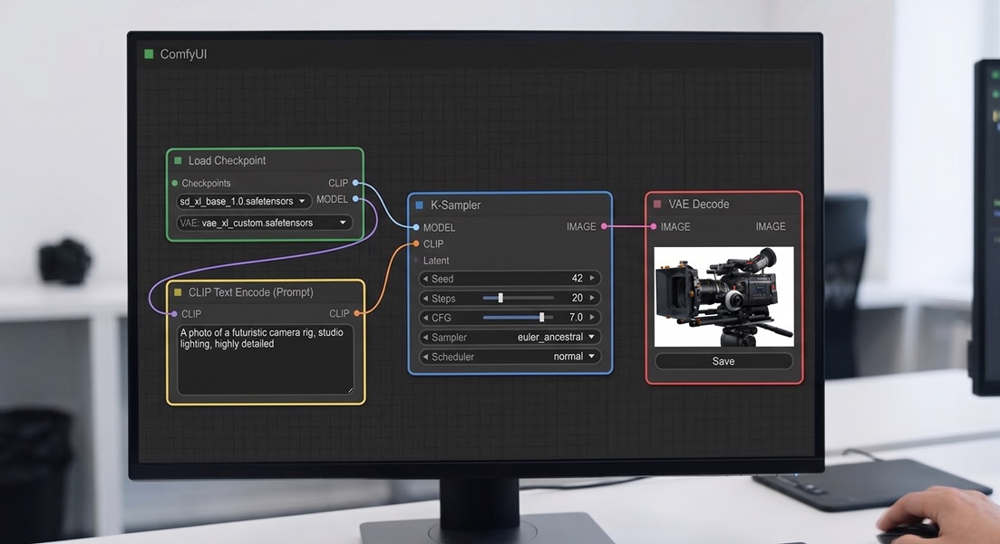

ComfyUI · Introduction · TECH OVERVIEW
What is ComfyUI
ComfyUI is a free, open-source, node-based interface for building AI image (and video, 3D, audio) generation pipelines visually — no code, just nodes connected by wires. This post walks through what a node is, how they connect, and what a basic text-to-image graph looks like.
ComfyUI is a node-based graphical interface for image generation1 (the use case covered in this blog, but also for text, video, 3D models, and more). Unlike tools that rely solely on text prompts, it lets you build complex visual pipelines (graphs of functional Nodes) in which every step of the generative process is explicit, editable, and composable with other graphs — intuitively, like Lego. This article introduces the core components — nodes, connections, inputs, parameters — with no programming knowledge assumed. This post is not an introductory course: for external tutorials and annotated online resources, see ComfyUI: curated online resources. NOTE: if the technicalities of this section bore you, skip straight ahead to browsing the stories listed on the Graphic novels and Storyboards page.

-
01
Nodes, connections, input arguments, parameters
ComfyUI is built on three foundational elements: Nodes, Arguments, and Connections. One or more input nodes receive incoming data and information. Symmetrically, one or more output nodes emit outgoing data and information. In between, a network of further interconnected nodes is constructed to transform information from Input to Output. A node is a self-contained processing unit that performs a single basic function — loading a network model, encoding a text prompt, transforming a plain image into a latent vector, and so on. Connections can be thought of as the cables linking the output of one node to the input of another, thus forming chains through which information (or, put differently, data) flows. Without resorting to formal definitions, the totality of these chains constitutes a graph — a set of interconnected nodes running from one or more Inputs to one or more Outputs. Graphs give rise to a workflow (a work flow, or more precisely a flow of information passing through stages) known as a pipeline — by analogy with a system of oil pipelines. Arguments are the input variables of the function or neural network that underlies the node. The user can browse through them in predefined slots and enter specific values, without ever having to interact directly with lines of code. For a ComfyUI user, arguments are the parameters exposed directly inside the graphical box that forms the node — text fields, drop-down menus, numeric sliders, and so on — which allow the node to be configured. Together, these elements make every pipeline fully readable: the entire generative process can be followed from left to right, and any individual stage can be viewed inside the flow.
-
02
The ComfyUI graph in the figure
Let us break down the ComfyUI graph shown in the figure into its components. This pipeline represents a basic flow for text-to-image generation (that is, from a descriptive text to the generated image) using the Stable Diffusion XL model. The process follows a logical path from the upper left to the right: the information flow passes through the nodes: Load Checkpoint, CLIP, KSampler, VAE Decode. These nodes are connected by edges (in practice, the connecting wires) that exit from the right side of each node and enter the left side of the next. Let us look at the meaning of these nodes and how they are connected.
- Load Checkpoint (Green) This node is the starting point. It loads the neural network (the Stable Diffusion XL base model: SDXL) from checkpoint files (a checkpoint is the saved state of a neural network that has already completed its training). It supplies the three essential components of the pipeline, explained below: the SDXL Model (for image generation), the CLIP network (for text-to-image association), and the VAE network (for the final decoding of the image into visible form).
- CLIP Text Encode (Yellow) — This node receives the text prompt (e.g.: A photo of a futuristic camera rig...) and passes it to the CLIP component. This component aligns the text to the prior images contained in its dataset (since it has been pre-trained on billions of text/image pairs). In plain terms, it 'recognises' the text as a combination of image fragments (tokens), mapped within abstract mathematical spaces (vectors of numbers).
- KSampler (Blue) — the core sampling node: through a series of iterations it transforms random noise into a defined image (metaphorically, it is like discovering a picture hidden in fog and gradually bringing it into focus). It receives as input the SDXL model and the image description, as can be seen from the connections entering the node.
- VAE Decode (Purple) — This node receives the vector representation of the image (that is, the numerically encoded form in mathematical space) produced by the KSampler, and translates it into real pixels to produce the final visible image, which can then be saved.
-
03
How and why we use it here
This site uses ComfyUI as the generative engine for all its visual stories (comics and storyboards). Rather than generating images through a chat interface or a static web form (one shot), ComfyUI offers control over every stage of the process: model selection, text prompt encoding, parameter adjustment, and the insertion or removal of modules (character and environment conditioning, output post-processing, and so on)2. The pipelines built in this way are designed for sequential storytelling — graphic novel panels, storyboard frames, character body, face and costume — where consistency across different poses of the same character matters greatly (something that cannot be achieved simply by repeating prompts). All graph workflows associated with the stories are downloadable from their respective pages, listed in Comics and Storyboards.
Finally, one practically significant development. Until about eighteen months ago, ComfyUI graphs were built by hand, connecting pairs of module nodes through the graphical interface of the environment. This meant an enormous amount of work to create graphs of just 10–20 nodes — far smaller than those used to generate stories such as the one shown in Under the Asphalt, which have 80+ nodes and hundreds of connections. Today, through Vibe Coding it is possible to generate the graph JSON3 directly via an LLM (Claude, Gemini, the various GPT models from OpenAI, and others), and then, if needed, refine it directly in an editor or regenerate it through further Vibe Coding. An epoch-making shift whose full implications will become clearer over the next one to two years.
- The concept of node-based programming is not new in computer science. In short, it involves an interactive environment that requires no code writing: the program is instead created by connecting graphical blocks, each of which performs a specific function. The first prototypes appeared as early as the 1960s, but it was only in the last twenty years, with the rise of No Code programming, that this approach gained widespread success. Ultimately, ComfyUI had the intuition — and the organisational skill — to structure an AI environment No Code in which the nodes were components of neural networks, or graphical functions to connect alongside them. ↩
- Without going into detail, ComfyUI offers not only a design front end through nodes and connections, but also integration with programs (Python) and (bash) scripts. This is particularly useful for creating image variations and for building function loops — which represent the real engine of any non-trivial workflow (by default, looping nodes directly is not possible, so external code must be integrated into the Python environment). ↩
- JSON (JavaScript Object Notation: created by Javascript group, and subsequently spread to other environments ) is a lightweight text format for representing structured data as key-value pairs — readable by both humans and machines. ComfyUI uses JSON as the native file format for its workflows: every node, connection, and parameter of a graph is serialised into a single .json file that can be saved, shared, and loaded back into the environment exactly as built. ↩
FAQ
Is ComfyUI free? Yes — it's open source, with roughly 60,000 community-made custom nodes available, though the essentials number around 100 to 200.
Do I need to know how to code to use ComfyUI? No. It's a no-code, node-based environment: you connect pre-built graphical blocks instead of writing code. Python/bash integration is available if you want to loop or script a workflow, but it's optional.
What is a ComfyUI workflow file? Every node, connection, and parameter in a graph is saved as a single .json file — the native format ComfyUI uses to save, share, and reload a workflow exactly as built.
How is ComfyUI different from just prompting a tool like Gemini? Gemini turns a short text prompt into a result in one step. But that single step is only what the user sees — the sub-graph involved in generation is actually complex (consider how Gemini can create dozens of uncited characters, purely for consistency between the story and similar scenes it was already trained on). ComfyUI, differently, exposes the pipeline explicitly: it's built into the project's design by the user or by a supporting AI — more control, more setup. See Gemini vs ComfyUI: a comparison for when each approach wins.
Related: ComfyUI Visual Stories — Concepts for how this site's own pipeline uses these nodes for consistent characters, and Gemini vs ComfyUI: a comparison for when a prompt-only tool is the better choice.